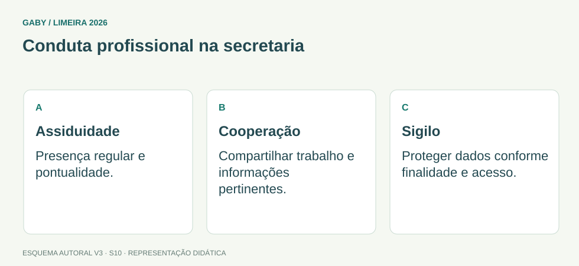

Objetivos do módulo
- Compreender comportamento profissional e relações interpessoais no ambiente escolar.
- Aplicar ética, discrição e sigilo à rotina da secretaria.
- Diferenciar conflito profissional de ataque pessoal.
- Entender assiduidade e responsabilidade funcional como elementos do serviço.
Conduta profissional na secretaria

Descrição em texto do esquema
- Assiduidade: Presença regular e pontualidade.
- Cooperação: Compartilhar trabalho e informações pertinentes.
- Sigilo: Proteger dados conforme finalidade e acesso.
Oficina visual · aplique o esquema
Um servidor se ausenta e deixa sua senha para um colega emitir documentos em seu nome. Qual problema isso cria?
Atividade autoral complementar da V3. Registre sua resposta; a resolução está no arquivo de gabarito e revisão.
Mapa do conteúdo
1. Relações humanas no trabalho
A secretaria escolar interage com direção, professores, alunos, famílias, servidores e órgãos externos. Relações profissionais saudáveis dependem de respeito, cooperação, comunicação clara e cumprimento de responsabilidades.
Divergência de opinião é normal. O problema surge quando o conflito deixa o campo profissional e vira desrespeito, boato, retaliação ou obstrução do trabalho.
2. Ética profissional
Conduta ética envolve atuar conforme normas, interesse público, respeito aos usuários e responsabilidade pelos próprios atos. Favorecimento pessoal, manipulação de registros, omissão deliberada e uso indevido de informação são incompatíveis com essa postura.
O servidor deve reconhecer limites de competência: não decide o que cabe à direção ou autoridade superior apenas para “resolver mais rápido”.
3. Sigilo e discrição
A secretaria lida com dados escolares, pessoais e funcionais. Sigilo significa impedir divulgação indevida, mas não impedir acesso legítimo de quem precisa da informação para exercer atribuição ou direito.
Conversar sobre situação de aluno em corredor, grupo informal ou rede social pode expor informação desnecessariamente.
4. Assiduidade e pontualidade
Assiduidade é regularidade de comparecimento; pontualidade é cumprimento dos horários. Em ambiente escolar, ausências e atrasos injustificados podem comprometer atendimento, prazos, matrículas, documentação e divisão de trabalho.
A prova pode apresentar assiduidade como componente do comportamento profissional e da responsabilidade funcional.
5. Trabalho em equipe
Cooperação não significa executar atos ilegais ou assumir responsabilidades indevidas. Uma equipe eficiente compartilha informação necessária, respeita papéis, documenta decisões importantes e busca solução institucional para conflitos.
Exemplos resolvidos passo a passo
Exemplo 1
Situação: Colega pede senha do sistema porque esqueceu a própria.
Exemplo 2
Situação: Servidor comenta no corredor problema familiar de um aluno para colegas sem necessidade funcional.
Exemplo 3
Situação: Duas pessoas discordam sobre procedimento.
Pegadinhas e erros frequentes
- Confundir coleguismo com compartilhamento de senha.
- Divulgar informação porque “todo mundo da escola conhece”.
- Favorecer conhecido no atendimento.
- Tratar assiduidade como irrelevante.
- Resolver conflito por boato ou exposição pública.
Resumo de prova
- Relação profissional exige respeito e cooperação.
- Ética = norma + interesse público + responsabilidade.
- Sigilo protege informação contra divulgação indevida.
- Acesso legítimo não é quebra de sigilo.
- Assiduidade e pontualidade sustentam continuidade do serviço.
- Trabalho em equipe respeita competências.
Exercícios do módulo
Resolva sem consultar o arquivo de gabarito. As questões são autorais e construídas para treinar os conceitos do edital.
- é boa prática de equipe
- é obrigatório em plantões
- não afeta segurança
- é inadequado mesmo entre colegas
Fonte: referência de estudo.
- publicar dados sensíveis
- não registrar nada
- evitar divulgação indevida e permitir acesso legítimo quando cabível
- esconder toda informação de todos
Fonte: referência de estudo.
- classificação de arquivo
- regularidade de comparecimento ao trabalho
- qualidade da impressão
- tipo de documento
Fonte: referência de estudo.
- com base em normas, diálogo profissional e competência
- com ataques pessoais
- por boatos
- com alteração informal do procedimento
Fonte: referência de estudo.
- é cortesia obrigatória
- é sempre permitido
- melhora igualdade
- viola postura ética e impessoal
Fonte: referência de estudo.
- em redes sociais
- para satisfazer curiosidade
- quando necessária e entre pessoas autorizadas
- em qualquer grupo informal
Fonte: referência de estudo.
- modalidade de matrícula
- cumprimento adequado dos horários
- sinônimo de sigilo
- forma de arquivo
Fonte: referência de estudo.
- não autoriza descumprir controles ou competências
- permite usar a senha do outro
- elimina responsabilidades individuais
- dispensa registro
Fonte: referência de estudo.
- ocultar por amizade
- publicar em rede social
- alterar provas
- seguir canais e procedimentos institucionais
Fonte: referência de estudo.
- não se relaciona ao atendimento
- permite manipular dados por boa intenção
- abrange uso responsável de informação e registros
- se limita à roupa
Fonte: referência de estudo.
Quando terminar, abra Secretário de Escola 10 - Relações Humanas, Ética, Sigilo e Assiduidade - Gabarito e Revisão.
Checklist de domínio
- ☐ Compreender comportamento profissional e relações interpessoais no ambiente escolar.
- ☐ Aplicar ética, discrição e sigilo à rotina da secretaria.
- ☐ Diferenciar conflito profissional de ataque pessoal.
- ☐ Entender assiduidade e responsabilidade funcional como elementos do serviço.
Meta do módulo: 80% ou mais nas questões, sem depender de consulta.
Referências e conteúdos auxiliares
- Brasil — Lei 13.709/2018, LGPD, texto compiladoPrincípios de finalidade e necessidade, proteção de dados e tratamento pelo poder público.
- Brasil — Constituição Federal, texto compiladoLeia os dispositivos indicados no módulo e suas remissões no texto oficial.
Referências externas de apoio consultadas para a V3 em 27/09/2026. A origem das questões é o material autoral do projeto; estes links não indicam que uma instituição publicou ou validou os exercícios. As páginas externas precisam de internet. Em informática, confira a versão do programa; em legislação, observe o recorte e as regras de atualização do edital.